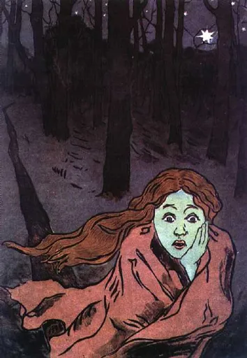
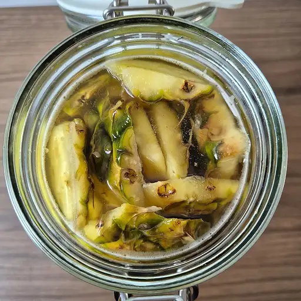

Reject an image by adding its slug to public/charades/charades-hard/reject.txt (append ! to keep it word-only), then re-run node scripts/genimages.mjs.
Fame fame Public domain · Derek Jensen (Tysto) · source

Fear fear Public domain · Maria Yakunchikova · source

Fermentation fermentation CC BY-SA 4.0 · GCO Education & Co · sourceForgiveness forgiveness CC BY-SA 2.0 · scem.info · source